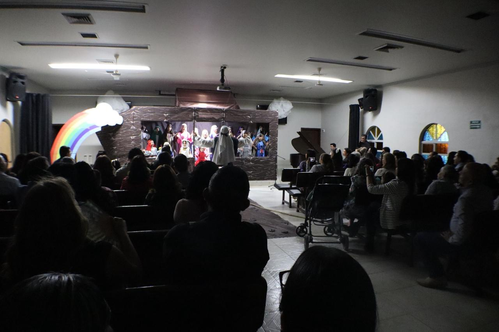
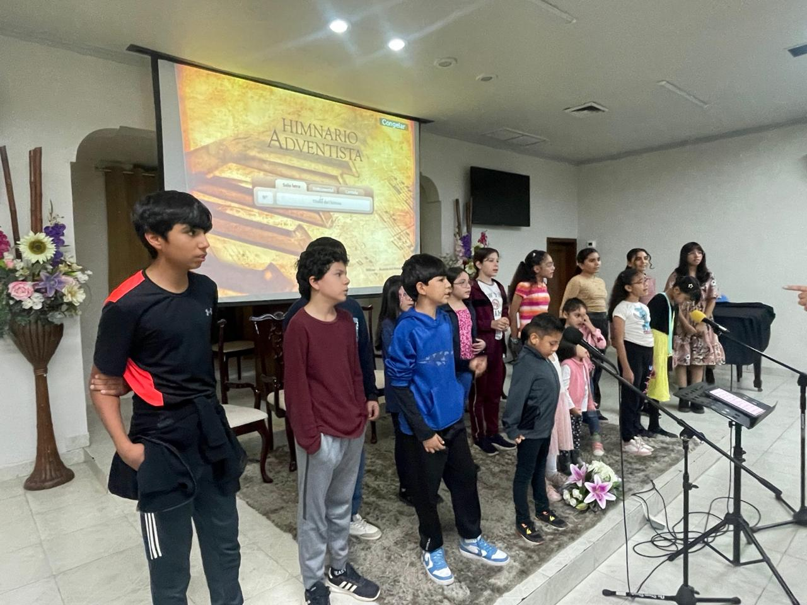

Proyecto Barca
IASD Distrito Constitución · Obregón, Sonora, México
El Proyecto Barca es una iniciativa del Distrito Constitución dirigida a niños de la comunidad, con el propósito de brindarles un espacio integral donde puedan aprender, crecer y divertirse a través de la música, la creatividad, el juego y la enseñanza bíblica.
Se esperó la participación de aproximadamente 20 a 30 niños, además de padres y miembros de la iglesia colaborando en la organización. El proyecto culminó con la Cantata del Arca de Noé como evento final comunitario.




👥 Estructura del equipo — 22 a 25 colaboradores
El proyecto funcionó gracias a una organización clara de roles y responsabilidades que permitió que cada área operara con autonomía y coordinación simultánea.